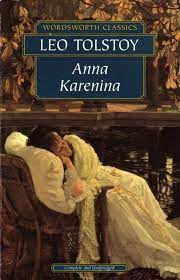

Literatura Favorita
by William Hernandez
Ana Karenina
es una novela del autor ruso León Tolstói,
publicada por primera vez en forma de libro en 1878.
Muchos escritores la consideran una de las obras literarias más grandes jamás escritas,
y el mismo Tolstói la llamó su primera novela verdadera.
Inicialmente se publicó en entregas en serie desde 1875 hasta 1877,
y todas menos la última parte aparecieron en la revista El Mensajero Ruso.

Ir a pagina index